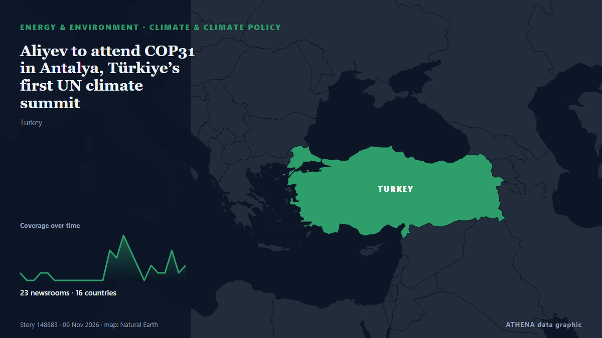

Aliyev to attend COP31 in Antalya, Türkiye’s first UN climate summit

As global climate negotiators and government officials convene for the annual United Nations climate summit, the scientific organization they rely on to guide their decisions is mired in gridlock and… από Inside Climate News
Αναφέρθηκε ανεξάρτητα από 28 μέσα σε 19 χώρες από τις 7 Νοε, πρώτο το Daily Sabah· η κάλυψη κορυφώνεται. Το ATHENA εκτιμά τον κίνδυνο μέτριο (3.2/10), κυρίως λόγω της σοβαρότητάς του και του ρυθμού κάλυψης. Βεβαιότητα 90% (υψηλή): το επιβεβαιώνουν 28 ανεξάρτητα μέσα, μέση αξιοπιστία 74%. Μέσα ανά χώρα: Τουρκία (13), Μπανγκλαντές (4), Ηνωμένες Πολιτείες (2). Κάλυψη: 7 Νοε έως 9 Νοε, 50 ώρες.
Γιατί έχει σημασία: Οι εξελίξεις στην ενέργεια και τους πόρους επηρεάζουν τις τιμές καυσίμων και ρεύματος, την ασφάλεια εφοδιασμού και τους κλιματικούς στόχους.
Τι άλλαξε: 36 νέες αναφορές από 26 μέσα στο 24ωρο έως 9 Νοε.
Πρώτη διατύπωση: Turkish experts look to COP31 for solutions on water, food
Οι τίτλοι των ειδήσεων παρουσιάζονται στα αγγλικά, όπως δημοσιεύτηκαν.
Πώς να διαβάσετε αυτή τη σελίδα
- Τι διαβάζετε
- 28 μέσα σε 19 χώρες ανέφεραν αυτό το γεγονός. Οι αναφορές παρακάτω εμφανίζονται με τη σειρά που δημοσιεύτηκαν· κάθε τίτλος ανοίγει το αρχικό άρθρο. Το ATHENA δεν γράφει δικά του ρεπορτάζ.
- Η εκτίμησή μας
- Για την καταγραφή — Οι αναφορές περιγράφουν ένα ολοκληρωμένο, εσωτερικό, εμπορικό ή προσωπικό ζήτημα. Το καταγράφουμε ώστε να βλέπετε ποιος το ανέφερε και πότε. Δεν παρακολουθούμε εδώ κίνδυνο ευρύτερης σύγκρουσης.
- Πόσα στοιχεία υπάρχουν
- Επαρκής Αρκετά ανεξάρτητα μέσα συμφωνούν, αλλά η εικόνα μπορεί ακόμη να αλλάξει.
Αφού αφαιρεθούν οι επαναλήψεις, τα άσχετα και τα παλιά στοιχεία, υπολογίζονται 23 από τις 39 αναφορές που παρατίθενται· το 87% των τίτλων αντιστοιχεί στο γεγονός.
- Τι δεν σημαίνει
- Το ATHENA μετρά πώς καλύπτεται ένα γεγονός, όχι αν είναι αληθές. Δεν είναι πρόβλεψη, κρίση για το ποιος έχει δίκιο ή συμβουλή.
- Τι θα την άλλαζε
- Αναφορές από άλλα ανεξάρτητα μέσα που δείχνουν διαφορετική εξέλιξη, ή σαφής επιβεβαίωση ή διάψευση από επίσημη πηγή.
Εκτίμηση R2 · ανανεώνεται με κάθε ενημέρωση της σελίδας. Το ATHENA δεν έχει δημοσιεύσει ακόμη ιστορικό επιδόσεων για αυτές τις εκτιμήσεις· όταν το κάνει, θα συνδέεται εδώ.
Με μια ματιά
Επιλέγεται, βαθμολογείται και γράφεται από τη δημοσιευμένη μεθοδολογία του ATHENA. Κανένας συντάκτης δεν παρεμβαίνει σε μεμονωμένα γεγονότα. Πώς παράγεται ›
| 07 Nov 03:41 UTC | 1 |
|---|---|
| 07 Nov 05:41 UTC | 0 |
| 07 Nov 07:41 UTC | 0 |
| 07 Nov 09:41 UTC | 1 |
| 07 Nov 11:41 UTC | 1 |
| 07 Nov 13:41 UTC | 0 |
| 07 Nov 15:41 UTC | 0 |
| 07 Nov 17:41 UTC | 0 |
| 07 Nov 19:41 UTC | 0 |
| 07 Nov 21:41 UTC | 0 |
| 07 Nov 23:41 UTC | 0 |
| 08 Nov 01:41 UTC | 0 |
| 08 Nov 03:41 UTC | 0 |
| 08 Nov 05:41 UTC | 4 |
| 08 Nov 07:41 UTC | 3 |
| 08 Nov 09:41 UTC | 7 |
| 08 Nov 11:41 UTC | 4 |
| 08 Nov 13:41 UTC | 2 |
| 08 Nov 15:41 UTC | 1 |
| 08 Nov 17:41 UTC | 3 |
| 08 Nov 19:41 UTC | 1 |
| 08 Nov 21:41 UTC | 1 |
| 08 Nov 23:41 UTC | 4 |
| 09 Nov 01:41 UTC | 2 |
| 09 Nov 03:41 UTC | 4 |
| 07 Nov 08:23 UTC | 0.0 |
|---|---|
| 08 Nov 07:05 UTC | 1.8 |
| 08 Nov 21:36 UTC | 2.6 |
| 09 Nov 05:30 UTC | 3.2 |
Γιατί αυτοί οι αριθμοί
Σημασία
Κίνδυνος
Βεβαιότητα
Η κάλυψη — ποιος το ανέφερε και πότε
ο τίτλος όπως δημοσιεύτηκε · ανοίγει το πρωτότυπο- Daily Sabah · ΤουρκίαTurkish experts look to COP31 for solutions on water, food
- Inside Climate News · Ηνωμένες ΠολιτείεςGlobal Science Panel Hits Roadblocks Ahead of COP31 Climate Summit
- Daily Sabah · ΤουρκίαTarkan's climate anthem gains traction ahead of COP31 in Antalya
- DW English · ΓερμανίαAs COP31 Antalya kicks off, can world move beyond big promises?
- RTÉ News · ΙρλανδίαIreland to take on central role at COP31 climate summit
- Capital Ethiopia · ΑιθιοπίαBusiness coalition urges COP31 Presidency to close electrification implementation gap
- Nikkei Asia · ΙαπωνίαCOP31 climate summit in Turkey, ASEAN Summit, Sri Lanka budget
- The Business Standard (Bangladesh) (working feed) · ΜπανγκλαντέςAs COP31 Antalya kicks off, can world move beyond big promises?
- Anadolu Agency (English) · ΤουρκίαCOP31 climate summit to kick off in Türkiye's Antalya on Monday
- The Daily Star — page reader · ΜπανγκλαντέςAs COP31 Antalya kicks off, can world move beyond big promises?
- Türkiye Today · ΤουρκίαCOP31 opens in Antalya on Nov.9 with focus on implementation
- The New York Times (World) · Ηνωμένες ΠολιτείεςA Guide to COP31 Climate Talks in Antalya, Turkey
- Hürriyet Daily News · ΤουρκίαTürkiye to host global climate talks as COP31 opens
- Guardian Environment · Ηνωμένο ΒασίλειοCop31: what is at stake at the UN climate summit and what can it achieve?
- Hürriyet Daily News · ΤουρκίαTürkiye eyes action-oriented COP31 with electrification at its core
- Hürriyet Daily News · ΤουρκίαCOP31 host city Antalya turns village into zero-waste hub
- Hürriyet Daily News · ΤουρκίαNearly 28,000 security personnel deployed for COP31
- The Guardian · Ηνωμένο ΒασίλειοWho’s who at Cop31: key players at the climate talks
- Hürriyet Daily News · ΤουρκίαAntalya to showcase nomadic Yörük culture at COP31
- Türkiye Today · ΤουρκίαLook at Blue Zone as COP31 prepares to open in Antalya on Nov.9
- TRT World · ΤουρκίαTürkiye gears up to host COP31 climate summit in Antalya
- Türkiye Today · ΤουρκίαAntalya to tighten traffic controls during COP31 summit
- The Rio Times · ΒραζιλίαUN Climate Talks Open Monday in Turkey
- Express Tribune · ΠακιστάνCOP31: the crisis of climate finance
- Le Monde (English) · ΓαλλίαCOP31 conference in Turkey aims to move climate up the agenda in a crisis-rocked world
- Arab News · Σαουδική ΑραβίαIndustrial powers’ climate finance debt trap at COP31
- MyJoyOnline · ΓκάναWe are united and ready to fight for Africa’s interests at COP31 – AGN Chair
- The Daily Star — page reader · ΜπανγκλαντέςCOP31 climate summit begins in Turkey today
- Türkiye Today · ΤουρκίαAliyev to attend COP31 in Antalya, Türkiye’s first UN climate summit
- RTÉ News · ΙρλανδίαIreland to help lead EU negotiations at COP31
- Indian Express · ΙνδίαExpert Explains | COP31: What’s at stake at UN climate summit in Antalya
- The Straits Times · ΣιγκαπούρηCOP31 to open in Turkey, with climate goals under pressure from war and AI
- BusinessWorld · ΦιλιππίνεςCOP31 to open in Turkey, with climate goals under pressure from war and AI
- Euractiv · ΒέλγιοSix things to watch at the COP31 climate talks
- Bangkok Post — page reader · ΤαϊλάνδηCOP31 opens as climate and geopolitical pressures mount
- CNA (Channel NewsAsia) · ΣιγκαπούρηCOP31 to open in Türkiye, with climate goals under pressure from war and AI
- ReliefWeb (UN OCHA) · INTWorld: COP31: Climate disasters hit nearly 50% more children a year in the last five years – Save the Children analysis
- Al Jazeera English · ΚατάρTurkiye pushes electrification top of climate agenda as COP31 set to open
- The Business Standard (Bangladesh) (working feed) · ΜπανγκλαντέςCOP31 opens as climate and geopolitical pressures mount